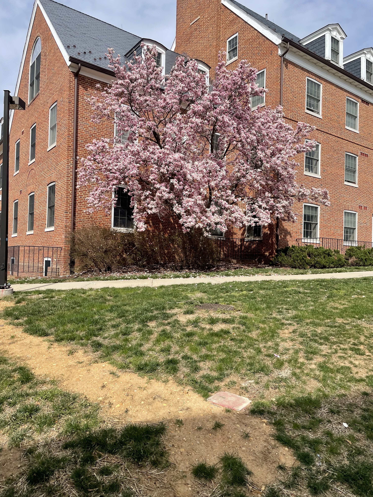
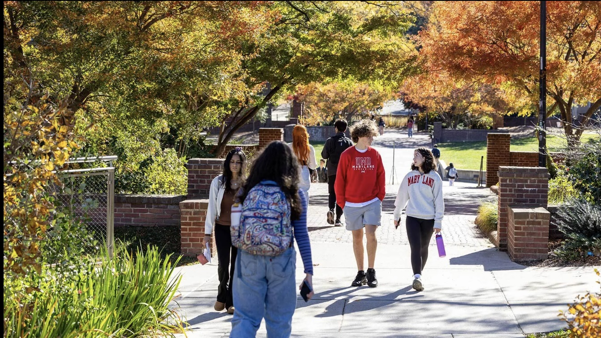
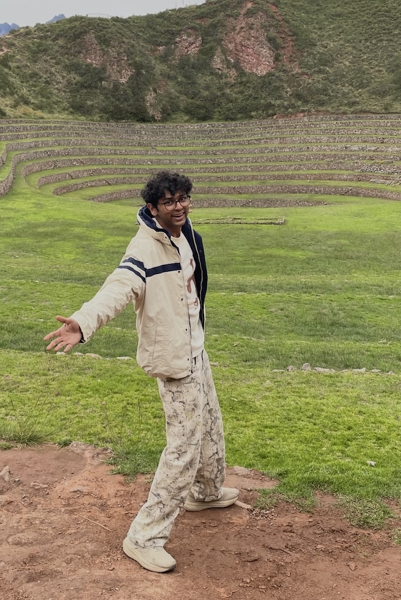

A living space
Native plantings, shade trees, and seating designed for the CSI Plaza at the University of Maryland.
A Social Action Project
The Serenity Spot is a student-led initiative to transform an underused corner of campus into a living greenspace, a place where students can rest, gather, and reconnect with the calming presence of nature.

Our Mission

The Origin
It was a regular day, and I was walking out of the Brendan Iribe Center. It had been a long one: heavy classes, social stress, job applications, all the regulars of being a college student today. Headphones on, I walked through the plaza, and I could feel the gloom and sheer exhaustion of it all. Not a single conversation going on. Everyone inside or scattering away. My first thought, like the hivemind around me, was simple: I want to leave. Let me get to Animal Sciences, my favorite outdoor nature space on campus.
When I started generating ideas for a social change project, that memory stuck with me. I wanted to be outdoors. I wanted to socialize. I couldn't do either in that spot. What pushed it further for me was the sheer number of students who walk through that plaza every single day. Computer Science is the biggest department on campus, and yet, in its outdoor setting, one of the most lifeless.
This project sets out to change that, and to bring social and therapeutic elements into a place that needs both.
Read the research →The Project, At a Glance
Native plantings, shade trees, and seating designed for the CSI Plaza at the University of Maryland.
A study and socializing spot for students, built around what they said they actually needed.
In partnership with the Facilities team, the Counseling Center, and potentially a studio group in the future.
34
Students surveyed
3
Partner organizations
10+
Stakeholders engaged

About
The Serenity Spot is led by Atharv Umap, a University of Maryland student majoring in Computer Science with minors in Math and Leadership Studies. He's carrying this project through LEAD320/321: Advanced Social Action Seminar, focused on the CSI–IRB pathway. This site is the project's working record, one semester of conversations, plans, and small wins, built so the position can be picked up by whoever takes it forward next.
Whether you're a student, a faculty advisor, or a neighbor, there's a way for you to take part in growing the community, not just The Serenity Spot.
See how you can help